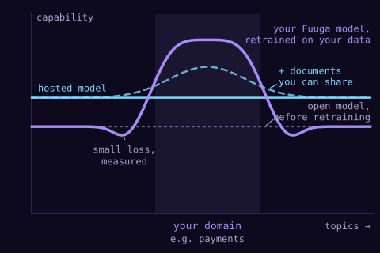

The idea

Your terms, decisions and code conventions become its defaults.
Searched in-house, including the ones that may never leave.
The gain and the small loss, on your own held-out tasks, before release.
Hietanen Consultancy · Fuuga · 03